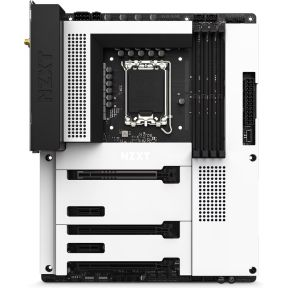

Daily Motherboard #12
NZXT N7 Z790
- Brand: NZXT
- Form Factor: ATX
- Chipset: Intel Z790
- Memory slots: 4x
- Memory type: DDR5
- Memory speed: 5000, 5066, 5100, 5133, 5200, 5300, 5333, 5400, 5600, 5800, 6000, 6200, 6400, 6600, 6666, 6800, 7000, 7200, 7400, 7600, 7800, 7900, 7950, 8000, 8333 MHz
- SATA-3 6Gbps: 4x
- Socket: 1700
- PCI-E 3.0 x1: 2x
- PCI-E 4.0 x16: 2x
- PCI-E 5.0 x16: 1x
Memory stuff
idk stuff
PCIE stuff
My opinion: I like the white clean style
Tweakers rating: Unknown/0 reviews Source
Source